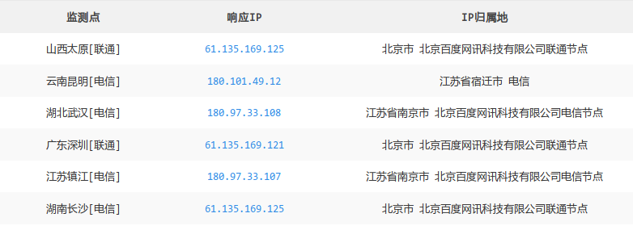

信息收集，收集的是那些信息？怎样收集？
信息收集，收集的是那些信息？主要的就是服务器配置信息和网站的一些敏感信息，包含不限于网站域名(及子域名)、操作系统、CMS指纹、真实IP、开放的端口、Whois信息、备案信息、证书、敏感目录、防火墙、登录页面等等，这些信息会对后期渗透带来极大的作用
分类
主动收集
通过扫描确认目标安装的操作系统和网络服务，并发现潜在漏洞的过程被动收集（外围信息收集）
在不接触目标的情况下搜集目标、网络、客户及其他信息
域名相关信息收集
这是在得到域名后的第一件事了吧...通常包括该域名的 DNS服务器信息和注册人的联系信息等
Whois信息
简单说，whois就是一个用来查询域名是否已经被注册，以及注册域名的详细信息的数据库（如域名所有人、域名注册商）。通过whois来实现对域名信息的查询。whois通常使用TCP协议43端口。每个域名/IP的whois信息由对应的管理机构保存。 ——度娘百科
在线 WHois查询网站：
国外的网站可能用国内的 WHois查不到，所以使用国外的 WHois：
本地 Tools：
whois(kali工具)
备案信息查询
主要针对国内网站
子域名收集
子域名，是顶级域名（一级域名或父域名）的下一级。例如：
mail.baidu.com是baidu.com的子域名
子域名探测可以帮我们发现渗透测试中更多的服务，这将增加发现漏洞的可能性（旁注）
Google Hacking
site:baidu.comsite:baidu.com -www
证书透明度
谷歌 Chrome要求2017年所有 SSL证书都要支持证书透明，所以可以根据 CT log查询支持 HTTPS网站的子域名
证书透明度（CT）是证书授权机构（CA）的一个项目，证书授权机构会将每个 SSL/TLS证书发布到公共日志中。
一个SSL/TLS证书通常包含域名、子域名和邮件地址
crossdomain.xml 文件
其他网站&工具 【TODO】
漏洞：
- DNS 域传送漏洞
在线网站：
- DNSdumpster 是一个免费的域名分析网站，是HackerTarget旗下项目，可以查询相关的子域名或者旁站域名
- dnsdb 全球 DNS搜索引擎
工具：
- Sublist3r 是一个python工具，旨在使用OSINT枚举网站的子域。
- subDomainsBrute 本工具用于渗透测试目标域名收集。高并发DNS暴力枚举，发现其他工具无法探测到的域名, 如Google，aizhan，fofa
- wydomain 猪猪侠开发的工具
- Knock Subdomain Scan 子域名扫描器，freebuf介绍
- subfinder 它已成为
sublist3r项目的继承者。freebuf介绍 - Layer子域名挖掘机
- SubBrute 枚举域名系统记录和子域的域名系统元查询蜘蛛
- aquatone 一款强大的域名工具，可以查子域名相同指纹站点
寻找真实 IP
CDN（content delivery network 或 content distribution network）即内容分发网络。如果目标使用了 CDN，那么直接 Ping目标的域名，得到的 IP是离我们最近的一台目标节点的 CDN服务器
判断 CND是否存在
通过多地 Ping域名
通过多地 Ping域名，查看对应 IP 地址是否唯一，若不唯一，多半是使用了 CDN
如果 IP大多不一样或者规律性很强，可以尝试查询这些 IP的归属地，判断是否存在 CDN

多地点 Ping在线网站：
使用 nslookup
nslookup会得到 DNS解析服务器保存在缓存中的非权威解答
1 | # 采用 CDN |
修改本地 hosts文件
修改本地 hosts文件，强行将域名与 IP解析对应 然后访问域名查看页面是否变化
IP反查域名（这个……）
使用 IP反查域名的方式查找 IP下是否存在对应域名，如果使用了 CDN，会出现大量无关域名：
地址：
绕过 CDN 查找网站真实 IP [TODO]
秃域名
因为现有很多 CDN厂商基本只要求把 www.xxx.com cname到 CDN主服务器上去，而且有人为了维护网站时更方便，不用等 CDN缓存，只让 WWW域名使用 CDN，秃域名不使用
1 | ping www.xxx.com |
抓包
抓包观察 IP地址，使用 telnet去连接相应端口，如果返回 html则为真实 IP
内部邮箱源（RSS订阅、邮件等）*
有的服务器本地自带 sendmail，注册之后，会主动发一封邮件给我们，打开邮件的源代码，你就能看到邮件服务器的真实IP了，很大可能与主站处在一个网段
注意，如果是第三方或公共邮件服务器是没用的
查询子域名*
很多站长可能只会对主站或者流量大的子站点做了 CDN，很多子站点又跟主站 在同一台服务器或者同一个C段内，从而能判断出目标的真实 IP段
国外主机解析域名&国外 DNS*
国内很多 CDN 厂商因为各种原因只做了国内的线路，而针对国外的线路可能几乎没有，此时我们使用国外的主机直接访问可能就能获取到真实 IP
国外 DNS：
1 | # 目标并未使用 CDN，这里只是举一个使用方法的例子 |
国外 Ping服务：
利用 SSL证书寻找真实原始IP*
Finding The Real Origin IPs Hiding Behind CloudFlare or Tor [19 August 2018]
目标 APP抓包*
如果目标站有自己的 APP，可以通过 Fiddler或 Burp Suite抓包，寻找真实 IP
利用网站漏洞(近距离与网站进行 Py交易)*
例如xss、ssrf、命令执行反弹shell等
历史解析记录
查看一些历史的 A记录说不定会发现什么 但是更多的可能是那个 IP已经不在用了…
在线网站：
- SecurityTrails
- 17CE
- Site report
- RiskIQ [需要注册]
1 | # 目标并未使用 CDN，这里只是举一个使用方法的例子 |
全网扫描*
通过扫描所有 IP，根据对比目标网站的 banner，找出其 IP 地址 可以用现成的搜索引擎： shodan、fofa、 zoomeye或扫描工具 zmap、Masscan等等
- (转)简单获取CDN背后网站的真实IP 使用 zmap扫描
利用 DDoS*
利用 DDoS耗光 DNS的流量，TG、暗网有专门的 DDoS
验证获取的 IP
找到目标的真实 IP后，如何验证其真实性？如果是 Web，可以直接访问 IP，看看响应页面是否和访问域名返回的一样， 其实上面判断 CDN的有些方法也可以；如果目标段比较大，可以借助类似 Masscan的工具批量扫描对应 IP段中所有开了 80、443、8080端口的 IP，然后逐个尝试访问，观察响应结果是否为目标站点
C段 [TODO]
当已获取某些子域名真实IP时，可以进行横向搜索，会有一些意想不到的收获
收集开放端口信息
在得到了网站的真实 IP后，就需要进一步的深入调查
通过扫描服务器开放的端口以及从该端口判断服务器上存在的服务甚至服务的版本，就可以对症下药
常用工具：
- Nmap （主要使用）
- censys（虽然不全）
- zmap 偏向于扫描指定范围内主机的某个指定端口是否开放
- Masscan 可用作 Nmap的替代品
nmap -sS xxx.com -p 21,22,23,3389nmap -sS xxx.com -Fnmap -sS xxx.com...
服务器系统
- 网址大小写是否敏感判断 Windows/Linux，Linux大小写敏感
nmap -sS xxx.com -O- FOFA 网络空间安全引擎
CMS指纹扫描&WAF [TODO]
这里的指纹是指网站 CMS指纹识别、计算机操作系统及 Web容器的指纹等
工具：
- header头信息
- Wappalyzer 浏览器插件，能够分析目标网站所采用的平台构架、网站环境、服务器配置环境、JavaScript框架、编程语言等参数
- 云悉 云悉在线WEB指纹CMS识别平台
- 在线cms指纹识别
- whatweb在线
- WhatWaf 检测和绕过 web应用程序防火墙和保护系统
- WAFW00F 识别 Web应用防火墙(WAF)产品的指纹
- WhatWeb（kali） 可识别web技术，包括内容管理系统(CMS)、博客平台、统计/分析包、JavaScript库，Web服务器和嵌入式设备等

目录扫描
使用工具：
- DirSearch 和 字典 [居家必备]
- dir_scanner（MSF：
msf5 > use auxiliary/scanner/http/dir_scanner）目录扫描 - robots_txt （MSF：
msf5 > use auxiliary/scanner/http/robots_txt） robots扫描 - 御剑后台扫描珍藏版
- DirBuster 是 OWASP开发的一款基于 JAVA编写的、专门用来探测 Web服务器的目录和隐藏文件
漏洞扫描
在了解了大多数信息后，就可以更近一步的 进行漏洞扫描
漏洞扫描
漏洞扫描工具：
- Rapi7 Nexpose
- Nessus（强烈推荐）MSF创建新任务报错
nessus.rb:979:in cmd_nessus_scan_new解决：#11117 若是持续出现 API Disabled，刷新无效，可在改回来 - OpenVAS（开源工具）


网站应用程序扫描
在知道了目标的大体网络架构和运行的服务情况，并对网络进行的漏洞扫描后，就可以进行网站应用程序扫描
常用扫描工具：
- sqlmap
- BurpSuite
- ZAP（kali）
- WebScarab （kali）
Ref
- 《黑客秘籍——渗透测试实用指南 第2版》
- 《Metasploit渗透测试魔鬼训练营》
- 《Web安全攻防 渗透测试实战指南》
- web安全信息搜集
- Web渗透测试-信息收集总结
- 渗透测试之信息收集
- 渗透测试0x00 信息收集
- 子域名收集笔记
- 绕过CDN，查找网站的真实IP
- Finding The Real Origin IPs Hiding Behind CloudFlare or Tor
- 绕过CDN查找真实IP方法
- 信息收集 - 端口扫描及服务识别
- 浅谈端口扫描技术
- DF-PUSH(May.17)——抛弃过时的御剑：DirSearch引领web路径爆破新时代！
- Metasploit 渗透测试手册第三版 第二章 信息收集与扫描
- 渗透测试相关总结